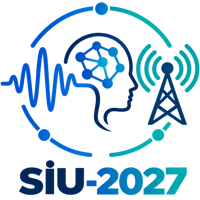

The 35th Signal Processing and Communications Applications Conference (SIU 2027) will be held on July 4–7, 2027 at the Kavacık South Campus of Istanbul Medipol University. Held without interruption since 1993, SIU is the national conference bringing together researchers working in signal processing, communications, computer vision, machine learning and biomedical technologies.
| Milestone | Deadline |
|---|---|
| Call for special session proposals | November 16, 2026 |
| Call for tutorial proposals | November 16, 2026 |
| Notification of special session acceptance | November 30, 2026 |
| Notification of tutorial acceptance | November 30, 2026 |
| Paper submission | February 1, 2027 |
| Notification of acceptance | April 30, 2027 |
| Camera-ready paper submission & author registration | May 24, 2027 |
| Conference dates | July 4–7, 2027 |
Papers are accepted only through Microsoft CMT; submissions sent by e-mail will not be processed.
cmt3.research.microsoft.com/SIU2027
Papers accepted and presented at the conference are submitted to the IEEE Xplore Digital Library. Publication requires an IEEE PDF eXpress check, the IEEE electronic copyright transfer (eCF) and registration of at least one author by May 24, 2027.